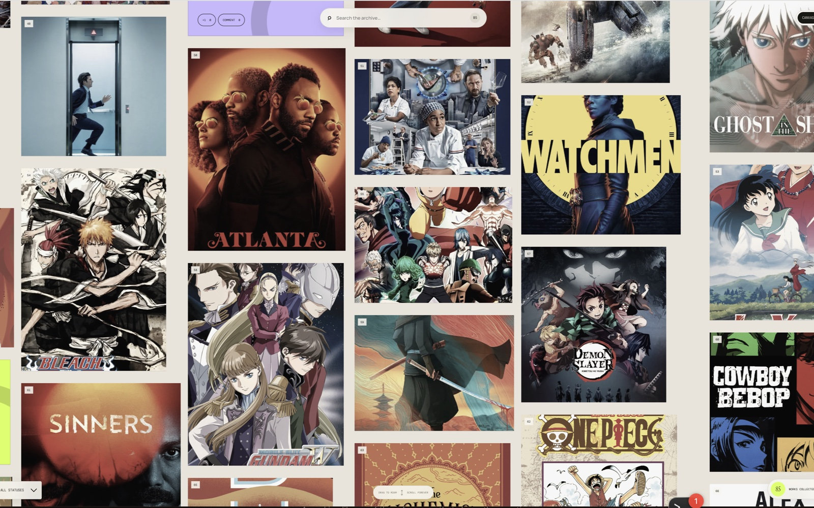

Hi, I'm Lawrence.
A constantly curious designer, founder, and inventor — building things that don't exist yet, always with passion behind the work.
- 8+ years in product design across consumer, fintech, and AI
- 3 patents shipped
- 1.5M+ users reached by work shipped to date

Different surfaces. Same instinct.
Across six companies, one throughline: build the new primitive that didn't exist yet. Innovation, learning, the next move before the category knew it needed one. Rakuten is chapter seven.


Dropbox AI.
Dropbox's first AI product — I was the initial designer, from problem framing to the keynote stage.
1.5M users in four months, and three patents along the way.

The same curiosity, off the clock.
A running practice of collecting, capturing, and making — constantly evolving and changing as I do.

A visual diary of the spaces and objects I move through.

A working library of the references that shape the practice — architecture to DJ culture.
Spatial design sketches and AR captures.
"…to be human, to live, to love, to fear, to struggle, to explore is one of the most beautiful things we get to experience."
Essays, ongoing — on Substack.